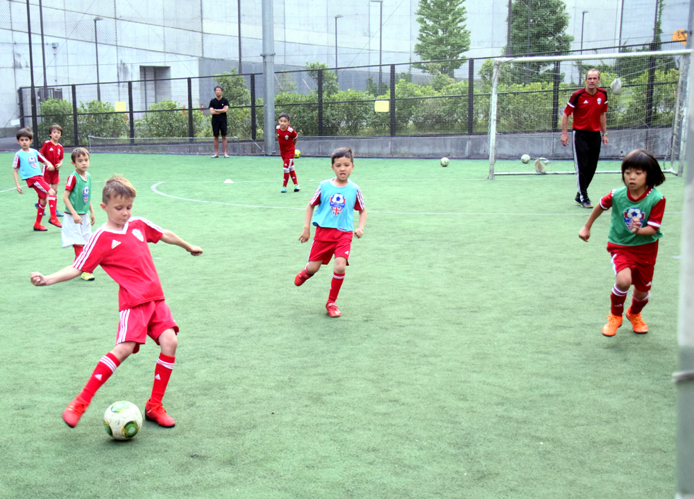

セッションスケジュールについて
新型コロナウィルス感染症（COVID-19）の拡大に伴い、先日開催された専門家会議にて「これから1~2週間が急速な拡大に進むか、収束できるのかの瀬戸際となります」との会見が発表されました。パンデミックへの備えに際し、政府はイベント開催について一律の自粛要請はしないものの、開催の必要性を改めて検討するよう発表がありました。
しかしながら、BFAでは開校地側から中止の要請がない限りは、セッションを決行する考えでおります。
現時点でのBFAセッションスケジュールについて（2/27現在）：
- TAC(月曜） - 決行
- Jaguars（火曜）‐ 中止（3月31日まで）
- U8育成プログラム（水曜）- 決行
- 赤坂（木曜） - 決行
- 代官山（金曜） - 中止（3月31日まで）
- 横浜（金曜） - 決行
- 大橋（土曜） - 決行
- 広尾（土曜・日曜）- 中止（3月15日まで）
- 六本木（日曜） - 決行
*随時更新予定
iNTERLiga 春
参加対象：Bulldogs(5歳以上), Lions, Academy メンバー
※Bulldogsクラスは数に制限がありますのでお早目にご連絡ください。当日に5歳以上のお子様のみ参加可能です。
会場：横浜カントリー＆アスレチッククラブ （山手・横浜）
集合時間：午前9時15分
開催時間：午前10時から午後1時
お申し込み：
Eメールにて、2020年3月19日（金曜日）までにご連絡下さい：education.ops@footyjapan.com
参加費：3000円 （現金で当日支払い）
U8 育成プログラム＠大橋ジャンクション
U8��では、チーム形式のトレーニングに特化し、試合やBFA Jaguars入団に向けレッスンを行っております。
冬期：毎週水曜日 1月8日~3月25日（12週）
場所：地下鉄半蔵門／新玉川線の池尻大橋駅、東口より徒歩５分です。
詳細・トライアルについてはメールでお問合せ下さい。
EWA（赤坂）冬期レッスンについて
ジム（室内）で練習を行います。直接ジムにお越し頂きますようお願い致します。
室内履きのご用意もお忘れなく！
冬期スケジュール：1月9日〜3月26日（12回）
詳しくはこちら
土曜日特別プログラム＠大橋ジャンクションフットサルコート 冬期
冬期スケジュール：1月4日~3月21日（9回）
1月4日、11日、18日、2月1日, 8日, 15日、3月7日、14日、21日
場所：池尻大橋駅(半蔵門線/田園都市線）より徒歩5分
詳しくはこちら
 プログラム@東京アメリカンクラブ(TAC)
プログラム@東京アメリカンクラブ(TAC)
BFAではTACメンバー様を対象としたクラスを行っています。（3〜11歳のお子様対象：Pups ~ Academy）
日付：毎月曜日、1月20日〜3月16日（8週間）
場所：東京アメリカンクラブ
お申込：TACウェブサイトよりお申込ください
BFA メンバーカード & メンバー ガイド
今学年度のメンバーカード及びメンバーガイドを配布開始しております。
メンバーガイドはご一読の上、保管いただきますようお願い申し上げます。
また、メンバーカードのご提示で、次のadidasショップ7店舗にて、20％のディスカウント（割引）が受けられます： 新宿、渋谷、横浜、池袋、六本木ヒルズ、アクアシティーお台場。
また Club 360 でもディスカウントをご利用いただけます。

 BFAセッション用の靴について
BFAセッション用の靴について
BFAクラスで使用可能な靴の種類の写真を掲載いたしましたのでご確認ください。
注：スパイク（取替式/固定式）は全開校地で使用できません。大きな写真を閲覧したい場合はここをクリックしてください
最新のスケジュールはこちらからダウンロードできます（ここをクリック）